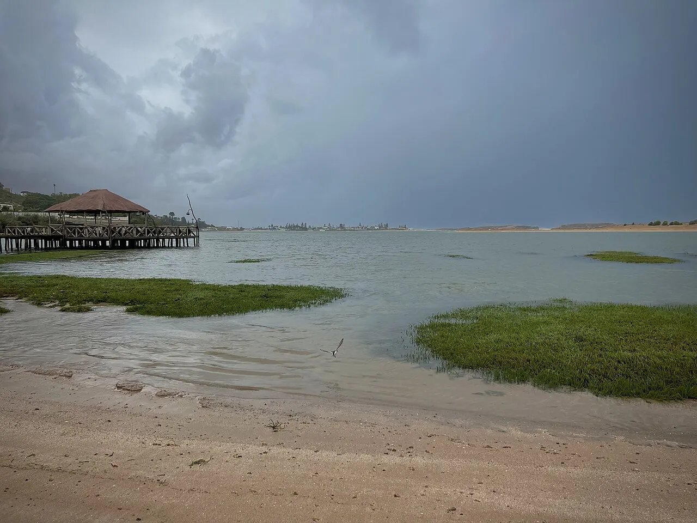

Oualidia
Doukkala, Maroc · baignade, kayak, surf

Lagune calme protégée par une barrière rocheuse, réputée pour ses huîtres. La passe offre aussi quelques vagues aux débutants.
- Lieu
- Doukkala, Maroc
- Niveau
- Débutant
- Activités
- baignade, kayak, surf
- Type d'eau
- Mer / océan
- Coordonnées
- 32.73, -9.04 (position approximative du secteur)
Dangers à connaître
- Courant fort dans la passe.
- Rochers à l’entrée.
Le conseil d'Ocean Buddy
Reste dans la lagune à marée descendante : le courant sort fort par la passe.
Ouvrir dans Ocean Buddy Télécharger sur l'App Store
Source : Fiche Ocean Buddy · septembre 2026 · à vérifier localement.